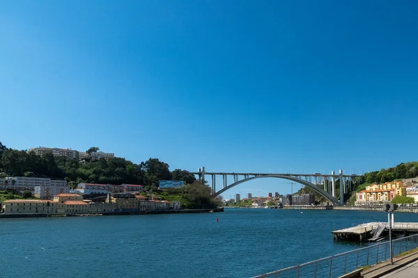
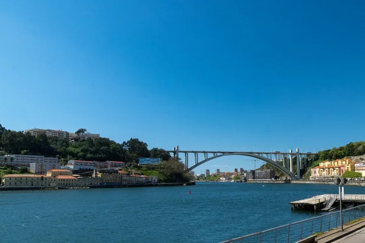

location_on Localização
A cidade do Porto, situada no noroeste de Portugal, encontra-se nas margens do rio Douro, a poucos quilômetros da sua foz no Oceano Atlântico. É a segunda maior cidade do país, conhecida pela sua rica história e cultura vibrante. Com uma localização estratégica, o Porto serve como um importante centro económico e cultural da região norte, além de ser o ponto de partida para explorar as vinhas do Vale do Douro, onde se produz o famoso Vinho do Porto. A cidade tem fácil acesso tanto por estrada quanto por ferrovia e está a cerca de 300 km da capital, Lisboa.